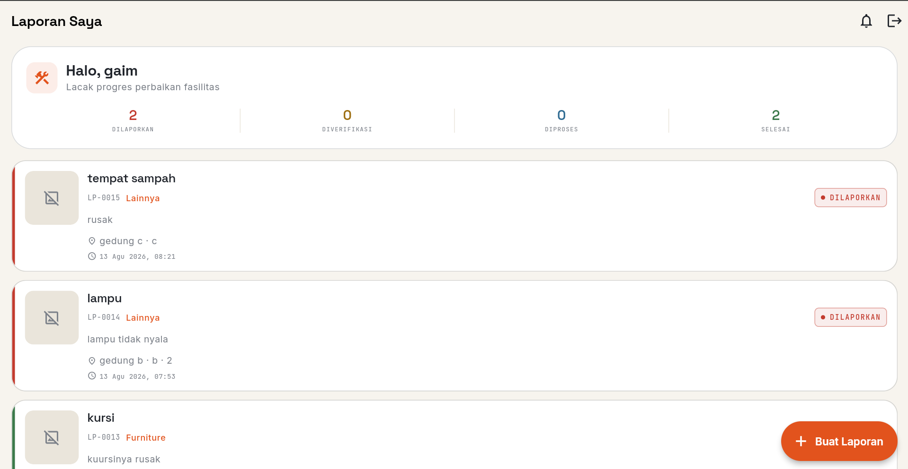
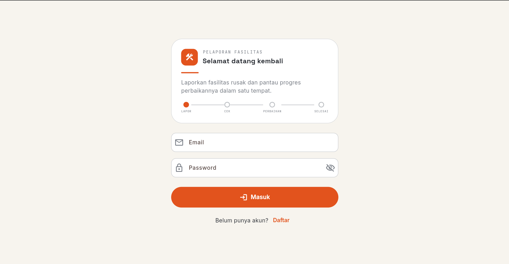
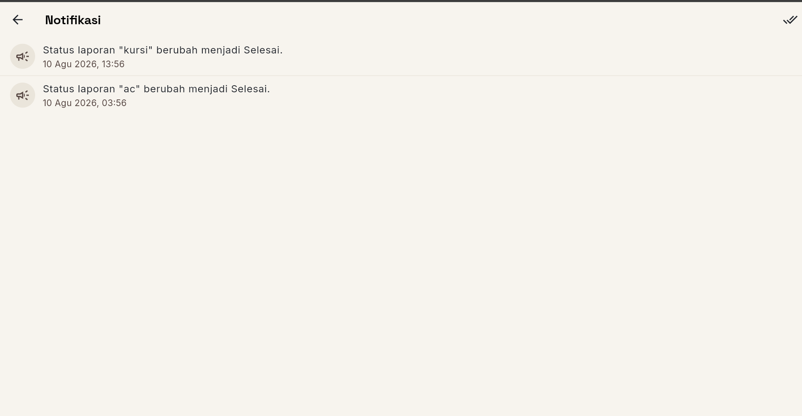

PelaporanFasilitas
Laporkan kerusakan fasilitas (listrik, AC, sanitasi, furniture, dsb.) dan pantau progres perbaikan sampai tuntas — semua dalam satu aplikasi.

Tentang
Latar belakang, tujuan, dan siapa yang dibuatkan aplikasi Pelaporan Fasilitas.
Latar Belakang
Di pergudangan/gedung kantor, kerusakan fasilitas sering terlewat karena proses pelaporan masih manual dan tidak terlacak.
Tujuan
Menyediakan satu sistem terintegrasi untuk melaporkan, memverifikasi, memproses, dan menyelesaikan perbaikan fasilitas.
Target Pengguna
Pegawai/staff yang melaporkan kerusakan, serta petugas/admin fasilitas yang menindaklanjuti.
Manfaat Utama
Transparansi progres perbaikan, notifikasi otomatis, dan statistik laporan untuk efisiensi tim fasilitas.
Keunggulan
Enam alasan utama pengguna memilih aplikasi ini.
Mobile-First
Dikembangkan dengan Flutter, tersedia di Android & iOS sekaligus.
Pelaporan Instan
Laporkan kerusakan hanya dalam 3 langkah: foto & kategori, detail, kirim.
Verifikasi oleh Petugas
Admin dapat memverifikasi, memproses, dan menyelesaikan laporan dengan progres foto.
Statistik Real-time
Dashboard admin menampilkan laporan per kategori, status, dan tren bulanan.
Notifikasi Otomatis
Pengguna mendapat notifikasi ketika status laporan mereka berubah.
Role-Based Access
Pengguna melihat laporan sendiri; admin mengelola semua laporan & kategori.
Fitur Utama
Fitur inti yang tersedia di dalam aplikasi Pelaporan Fasilitas.
Buat Laporan
Form 3 langkah: pilih kategori & foto,isi detail (judul, deskripsi, lokasi, gedung, ruangan), lalu kirim.
Kategori Kerusakan
Listrik, AC, Sanitasi, Furniture, Fasilitas Umum, Jaringan, dan Lainnya.
Detail Laporan
Lihat ticket number (LP-XXXX), timeline perbaikan, foto, dan riwayat status.
Dashboard Admin
Filter laporan per status/kategori/pencarian, lihat statistik dan grafik tren 6 bulan.
Update Status & Progres
Admin memperbarui status (dilaporkan → diverifikasi → diproses → selesai) dengan catatan & foto.
Manajemen Notifikasi
Notifikasi database dikirim otomatis saat status laporan berubah; tandai sudah dibaca.
Screenshot
Cuplikan dari beberapa layar utama aplikasi Pelaporan Fasilitas.




Alur Penggunaan
Langkah dari pengguna melaporkan hingga admin menyelesaikan perbaikan.
-
01
Login / Daftar Akun
Pengguna mendaftar dengan email & password, atau login jika sudah memiliki akun. Token disimpan via Sanctum & SharedPreferences.
-
02
Buat Laporan (3 Langkah)
Pilih kategori kerusakan & foto (opsional), isi detail (judul, deskripsi, lokasi, gedung, ruangan), lalu kirim. Sistem men-generate nomor tiket LP-XXXX.
-
03
Admin Memverifikasi & Memproses
Admin menerima notifikasi, memverifikasi laporan, mengubah status ke "Diproses", memberi catatan & foto progres.
-
04
Status Diperbarui → Selesai
Setiap perubahan status tercatat di timeline riwayat (Status Log). Pengguna mendapat notifikasi otomatis.
-
05
Pantau Progres & Statistik
User melihat timeline dan progres laporannya. Admin melihat dashboard statistik (per status, per kategori, tren bulanan).
Role Pengguna
Peran yang tersedia beserta hak akses masing-masing.
| Peran | Hak Akses | Deskripsi |
|---|---|---|
| Pengguna | Buat & lihat laporan sendiri, lihat detail & timeline, lihat notifikasi | Role default setiap akun baru. Hanya bisa mengelola laporan milik sendiri. |
| Admin | Lihat semua laporan, kelola kategori, update status & progres, akses statistik dashboard | Bertanggung jawab memverifikasi dan menyelesaikan laporan fasilitas. |
Status Laporan
Laporan berjalan melalui 4 tahap perbaikan, masing-masing dengan warna material tersendiri.
Dilaporkan
Laporan baru diterima dari pengguna — menunggu verifikasi admin.
Diverifikasi
Admin memverifikasi laporan — kerusakan dikonfirmasi dan siap diproses.
Diproses
Tim teknisi sedang memperbaiki fasilitas — progres dicatat dengan foto & catatan.
Selesai
Perbaikan selesai. Laporan ditandai tuntas dan ditutup.
Modul Sistem
Modul-modul utama yang membentuk aplikasi Pelaporan Fasilitas.
Modul Autentikasi
Registrasi, login, logout, dan restore sesi via Sanctum token + SharedPreferences.
Modul Pelaporan
Membuat laporan fasilitas dengan foto, kategori, lokasi, gedung, dan ruangan.
Modul Kategori
Mengelola kategori kerusakan (hanya admin): CRUD kategori dengan description.
Modul Update Status
Admin memperbarui status laporan (dilaporkan → selesai) dengan catatan & foto progres.
Modul Statistik
Dashboard admin: total laporan, distribusi status, per kategori, dan tren 6 bulan.
Modul Notifikasi
Database notification dikirim otomatis saat status laporan berubah; terbaca / belum terbaca.
Teknologi
Kumpulan teknologi yang digunakan untuk membangun aplikasi Pelaporan Fasilitas.
Flutter 3.11+
Framework UI cross-platform untuk Android & iOS dengan Material 3.
Laravel 13
Framework PHP untuk REST API dengan Eloquent ORM & Sanctum auth.
MySQL / SQLite
Menyimpan data user, laporan, kategori, status log, & notifikasi.
Dio + Provider
HTTP client dengan interceptor token & manajemen state reaktif.
Sanctum API Tokens
Token-based auth dengan encrypted personal access tokens.
SharedPreferences
Menyimpan token & data user secara lokal untuk restore sesi.
Arsitektur
Alur data dari sisi pengguna hingga ke penyimpanan, melalui REST API terautentikasi.
Flutter Client
Aplikasi mobile (Android/iOS) menggunakan Dio HTTP client + Provider state management.
Sanctum Auth
Bearer token (API token) dikirim di setiap request melalui interceptor Dio.
Laravel API
REST API (v1) memproses request: validasi, otorisasi, logika bisnis, notifikasi.
MySQL / SQLite
Menyimpan data user, laporan, kategori, status log, dan notifikasi database.
Setiap aksi pengguna di Flutter dikirim sebagai permintaan HTTP ke Laravel API
dengan header Authorization: Bearer <token>. Server memvalidasi
token, memproses logika bisnis (mis. update status laporan), mengirim notifikasi
ke user yang bersangkutan, lalu menulis data ke database sebelum mengembalikan
respons JSON ke client.
Database
Skema tabel dan relasi pada aplikasi Pelaporan Fasilitas.
- 1:N User → Report — satu pengguna dapat membuat banyak laporan
- 1:N Category → Report — satu kategori dapat memiliki banyak laporan
- 1:N Report → ReportStatusLog — satu laporan memiliki banyak catatan perubahan status
- 1:N User → personal_access_tokens — satu user dapat memiliki banyak API token
- N:1 notifications → User (morph) — notifikasi disimpan berdasarkan notifiable_type
id(bigint, PK, auto-increment)name(varchar 255)email(varchar 255, unique)role(enum: user, admin)password(varchar 255, hashed)timestamps
id(PK)user_id(FK → users)category_id(FK → categories)title,description(text)location,building,roomphoto(path, nullable)status(enum: dilaporkan/diverifikasi/diproses/selesai)note(text, nullable)
id(PK)name(varchar 255, unique)description(text, nullable)timestamps
id(PK)report_id(FK → reports)status(string)note,photo(nullable)user_id(nullable FK → users)
API Endpoint
REST API v1 berbasis Laravel Sanctum — semua endpoint prefix /api/v1.
| Method | Endpoint | Deskripsi | Auth |
|---|---|---|---|
| POST | /register |
Registrasi akun baru (role: user) | — |
| POST | /login |
Login, kembalikan API token | — |
| GET | /user |
Ambil data user yang terautentikasi | Sanctum |
| POST | /logout |
Invalidate API token | Sanctum |
| GET | /categories |
Daftar semua kategori (dengan report count) | Sanctum |
| POST | /categories |
Buat kategori baru (admin) | Admin |
| GET | /reports |
Daftar laporan (user lihat sendiri; admin lihat semua + filter) | Sanctum |
| POST | /reports |
Buat laporan baru (multipart, foto opsional) | Sanctum |
| GET | /reports/{id} |
Detail laporan lengkap (user & kategori & timeline) | Sanctum |
| PUT | /reports/{id}/status |
Update status laporan (admin: catatan & foto progres) | Admin |
| DELETE | /reports/{id} |
Hapus laporan (admin semua; user hanya milik sendiri) | Sanctum |
| GET | /notifications |
Daftar notifikasi (maks 50) | Sanctum |
| GET | /notifications/unread-count |
Jumlah notifikasi belum dibaca | Sanctum |
| PUT | /notifications/{id} |
Tandai satu notifikasi sudah dibaca | Sanctum |
| PUT | /notifications |
Tandai semua notifikasi sudah dibaca | Sanctum |
| GET | /admin/stats |
Statistik dashboard (total, per status, per kategori, per bulan) | Admin |
Keamanan
Fitur keamanan yang diterapkan untuk melindungi data pengguna.
Kebutuhan Sistem
Spesifikasi perangkat agar aplikasi berjalan lancar.
- PHP 8.3+
- Composer
- MySQL 8.0 / SQLite
- Node.js 20+ (Vite build assets)
- Web server (Apache/Nginx) atau php artisan serve
- Flutter SDK 3.11+
- Android 8.0+ / iOS 13+
- Android Emulator atau device fisik
- Koneksi internet (API localhost via 10.0.2.2)
- Ruang penyimpanan 200 MB
- Android & iOS (aplikasi mobile Flutter)
- Laravel API via browser atau Postman
- Endpoint teruji dengan token Sanctum
FAQ
Pertanyaan yang paling sering ditanyakan.
Clone repo api_pelaporan_fasilitas, jalankan composer install, salin .env.example ke .env, jalankan php artisan key:generate & php artisan migrate --seed, lalu php artisan serve.
Pastikan Laravel API sudah berjalan. Clone repo flutter_pelaopran_fasilitas, jalankan flutter pub get, lalu flutter run. Untuk Android emulator, API URL sudah diarahkan ke 10.0.2.2:8000.
Ya. Setelah menjalankan php artisan db:seed, tersedia: admin@pelaporan.test / password123 (role admin), dan user@pelaporan.test / password123 (role user).
Hak akses admin dikelola lewat kolom role di tabel users (enum: user / admin). Middleware admin melindari endpoint kategori CRUD dan statistik.
Ya. Foto laporan & progres disimpan di folder storage/app/public/reports/. URL foto dapat diakses via /storage/{path}.
Jalankan Flutter dengan --dart-define=API_URL=http://host-anda:8000/api/v1. Jika tidak dispecifikasi, web memakai localhost:8000 dan Android emulator memakai 10.0.2.2:8000.
Repositori GitHub
Akses langsung ke source code lengkap aplikasi.
Kontak
Ada pertanyaan atau masukan? Hubungi kami.